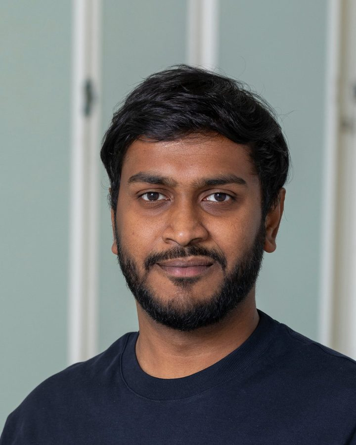
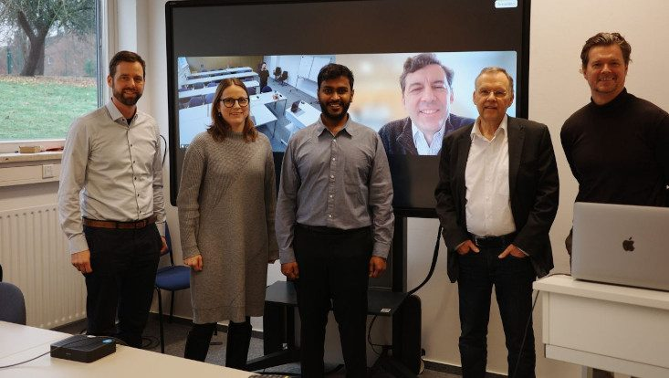

Dynamics of Collective Group Affect: Group-level Annotations and the Multimodal Modeling of Convergence and Divergence
IEEE Transactions on Affective Computing, vol. 17, no. 1, pp. 1014–1029
I research how machines can recognise and generate emotion in human speech.
PhD in Computer Science from the University of Hamburg, where I built probabilistic and generative models for emotion recognition and speech emotion conversion. I'm now a Machine Learning Researcher at ai-coustics in Berlin.

Probabilistic and Generative Modeling for Emotion Recognition and Synthesis
Current AI systems still lack social intelligence: the ability to perceive and express the social signals that make collaboration work. The dissertation focuses on affect and studies it in three directions: recognising it in one person, recognising it in a group, and synthesising it in speech.
Defended my PhD at the University of Hamburg: Probabilistic and Generative Modeling for Emotion Recognition and Synthesis. Thank you to Carlos Busso for serving as external reviewer.

Our work on collective group affect, with annotations and multimodal models of convergence and divergence, is published in IEEE Transactions on Affective Computing.
Presented duration modeling for in-the-wild speech emotion conversion at IEEE ASRU in Honolulu.
A chapter on subjectivity and uncertainty in behavioral labels appeared in Computational Group and Team Dynamics (Oxford University Press).
Presented EMOCONV-Diff, diffusion-based emotion conversion for in-the-wild speech, at ICASSP in Seoul.
IEEE Transactions on Affective Computing, vol. 17, no. 1, pp. 1014–1029
IEEE Workshop on Automatic Speech Recognition and Understanding (ASRU), Honolulu, USA, December 2025
IEEE International Conference on Acoustics, Speech and Signal Processing (ICASSP), Seoul, Korea, April 2024, pp. 11651–11655
IEEE Transactions on Affective Computing, vol. 15, no. 2, pp. 579–592 (published online June 2023)